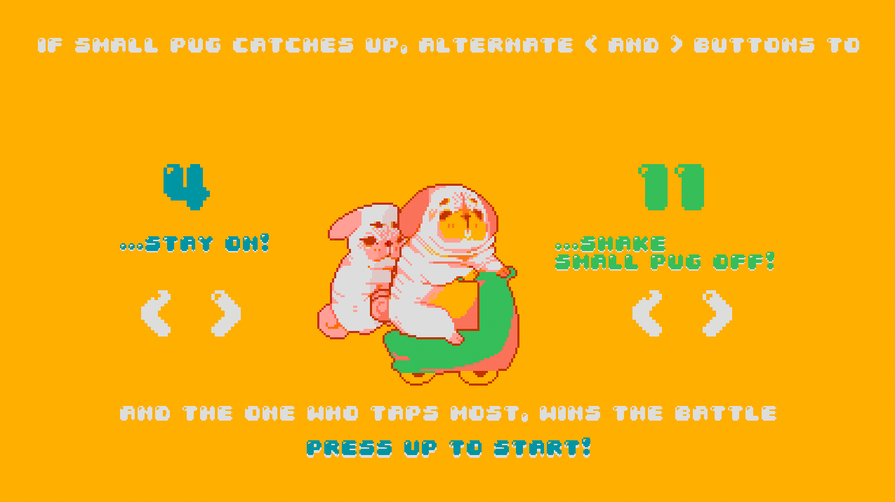
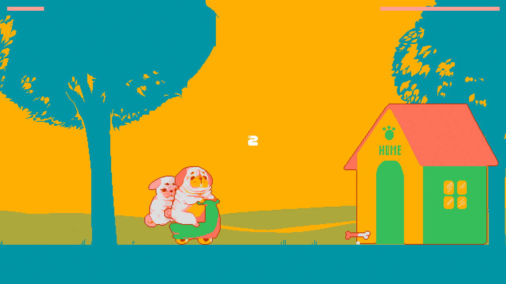
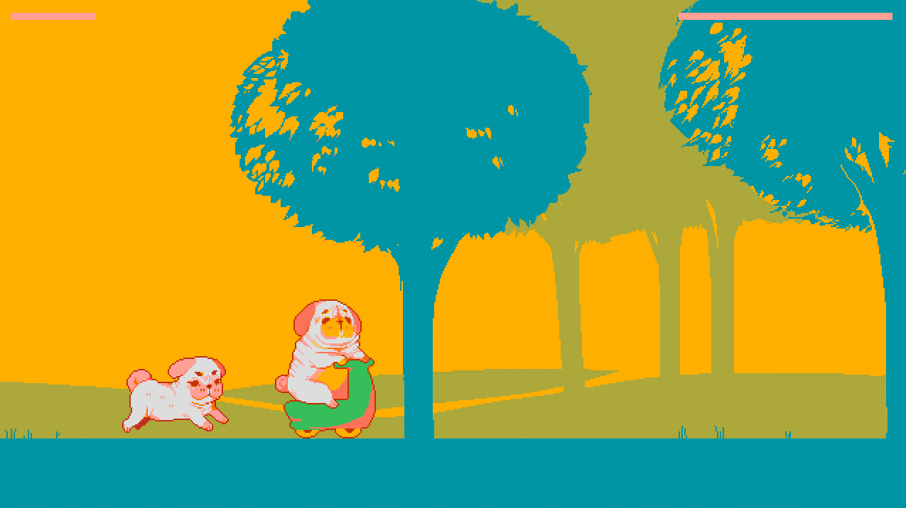
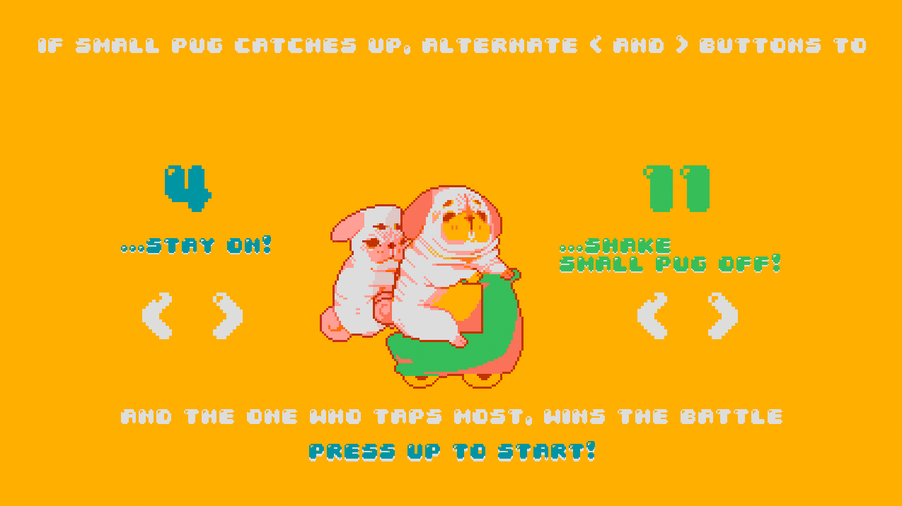
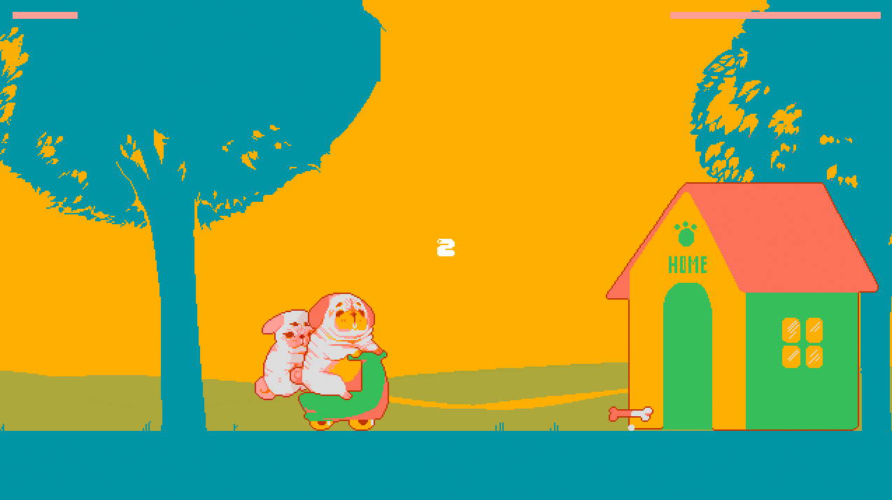
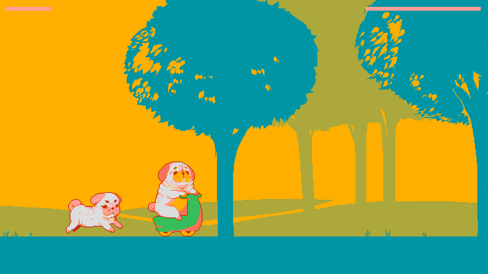

pixel-art game, javascript
Fat Pug, Small Pug is a two-player game where players take on the identity of either the hefty or girth-challenged pug to fight over the ownership of the coveted dog scooter! A pug-tastic time.

 




